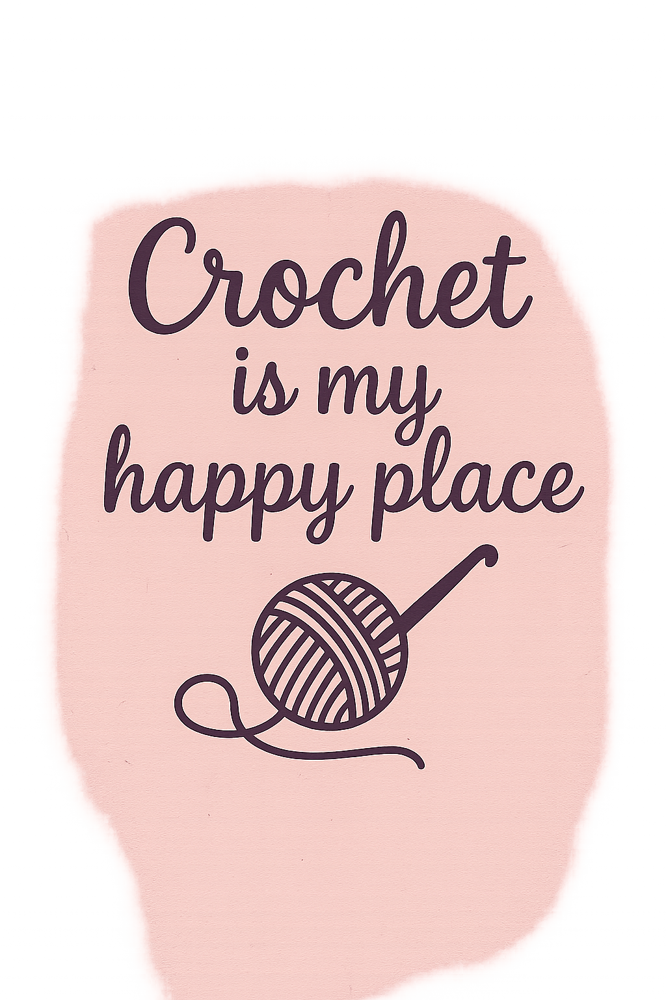
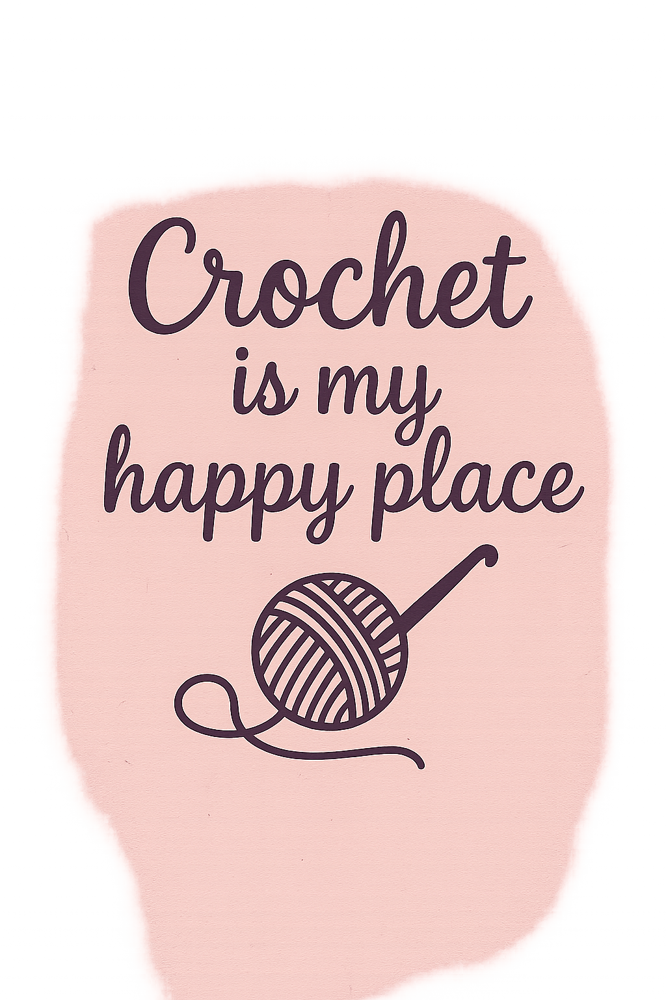

Welcome to my little corner of creativity. Here, I will be sharing daily blogs, written patterns, and handy guides for all your crochet projects. Now, you might be thinking, "Wait… what if I am a total beginner and need a video?" Do not worry at all. Every written pattern comes with a video link—no audio, just clear visuals and step-by-step text—so you can follow along without getting lost in sound or words.
Still feeling a bit unsure? No stress. You can always drop your questions in the comments section of my videos. And if you have any cool ideas or projects you would love me to crochet, I would be thrilled to hear them. Your suggestions really help me create things you will enjoy, and I cannot wait to see what inspires you.
So, are you ready to start a new crochet adventure together? I know I am. Grab your yarn, bring your hooks, and let us make some magic happen—come on, let us do this!